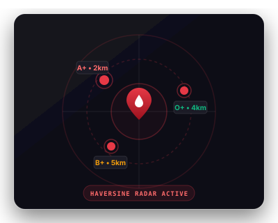
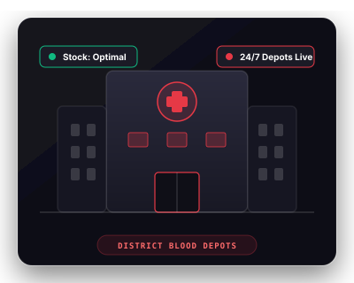
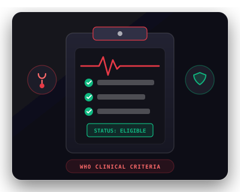
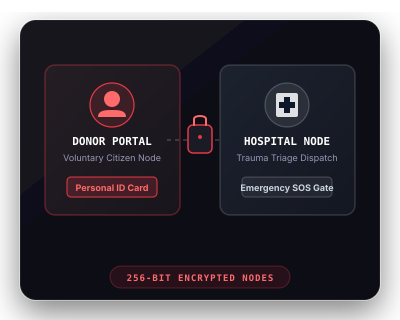
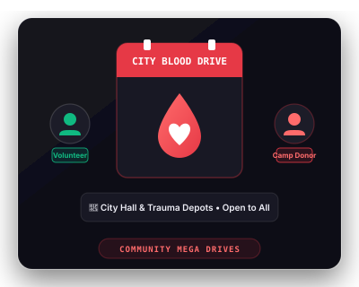

RED404 connects voluntary blood donors with nearby hospitals in real time. When emergencies strike and every second counts, we bring life-saving help fast.
Real-time emergency telemetry, intelligent donor matching, and clinical hospital dispatch designed to save lives in critical windows.
Check real-time blood availability within a 5km to 20km Haversine radius. View active donor counts and basic regional stats instantly without exposing personal identities.

Access our live telemetry network of verified district hospital blood banks and trauma depots. Find contact details and reserve status.

Not sure if you are eligible to donate today? Take our quick interactive health screening to instantly verify your status based on age, weight, and recent medical history.

Secure gateways for registered voluntary donors and verified clinical hospitals to manage profiles, donation history, and real-time SOS dispatches.

Discover and register for upcoming voluntary blood donation camps and community drives happening in your city.

Check real-time blood availability within 5km–20km Haversine radius without exposing personal identities.
Access our live telemetry network of verified district hospital blood banks and trauma depots.
Verify your medical eligibility today with our interactive AI Clinical health screener.
Secure gateways for voluntary donors and clinical hospitals to manage profiles and SOS dispatches.
Discover and register for upcoming voluntary blood donation camps and community drives.
A dedicated emergency blood donation network connecting voluntary donors with nearby hospitals in real time. We eliminate delays when every second counts.
Hospitals can broadcast urgent blood requirements in seconds. Immediate alerts ensure critical patient needs are met without life-threatening delays.
Our platform contacts eligible voluntary donors closest to the requesting hospital first, saving valuable transit time when minutes matter.
Registered donors receive real-time push alerts on their devices with blood group requirements, hospital details, and instant acceptance.
Every participating hospital and blood request is thoroughly verified, ensuring authentic emergencies, donor safety, and complete confidentiality.
Donors quickly register with their blood group, location, and contact information to join our life-saving community.
When blood is urgently needed, the hospital creates a request specifying blood type and units needed from their portal.
The network scans for compatible donors closest to the hospital, expanding into wider zones if additional donors are required.
Eligible donors receive immediate alerts on their phones with hospital details, urgency, and distance.
Upon accepting, the donor receives clear directions and the fastest travel route straight to the hospital blood center.
The donor arrives, donates blood, and saves a life. The request is fulfilled and donor history and badges are updated.
The city is divided into concentric zones. Emergency requests escalate outward until fulfilled.
First priority zone. Donors here receive immediate alerts. Response time under 5 minutes.
Secondary zone activated if Zone 1 has insufficient donors. Expanded search within 5 minutes.
Tertiary zone for critical shortages. All available donors in the extended area are alerted.
Join RED404 today. Every registration counts. Every donation matters.